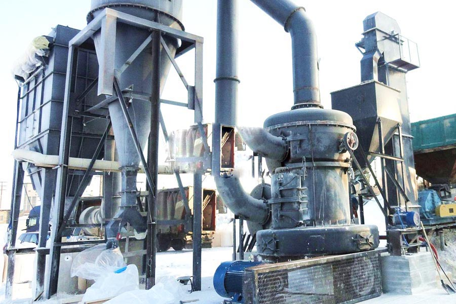

Construction waste crushing production line

Mobile construction waste crushing station for urban construction waste crushing.
Calcined dolomite production line
Calcined dolomite production line,Dolomite Raymond mill, dolomite processing equipment, dolomite as a carbonate mineral, its use is very extensive, after crusher, Raymond mill after mill and produce a variety of fineness products, dolomite rock ore, dolomite sand, dolomite powder, ultra-fine powder.
You can choose what dolomite processing mill equipment: processing fineness of between 15-425 mesh (the fineness can be adjusted), HGM Ultrafine ring medium speed mill: the processing fineness of between 325-3000 mesh (fineness can be adjusted).

As a result of its capabilities like elevated hardness and density, dolomite is widely utilized in glass creating, ceramics, steel making, agricultural PH control, construction and creating. Dolomite mining is important in heavy industry. To process dolomite, firstly dolomite is burnt, hardened and then made into tiny pellets and heated once again. These pellets of dolomite are then employed within the manufacture of blocks of dolomite refractory. Our dolomite mining equipments consist of dolomite crushing plant, dolomite grinding machine, dolomite vibrating feeder and dolomite vibrating screen. xsm has the folks, technology, expertise, and product support services to assist you maximize the efficiency of your grinding circuit.
Kenya dolomite processing plant price. Dolomite Powder Production Line The complete set Dolomite powder production line consists of hammer crusher, bucket elevator, storage hopper, vibrating feeder, main unit, inverter classifier, cyclone collector, pulse deduster program, high pressure positive blower, air compressors and electrical manage systems. The main bearing and each and every dial are driven by electromotor of principal machine through reducer, and numbers of rollers, that are rolling within the ring, are driven by dial via plunger. Right after crushed by hammer crusher, the large supplies become little ones and are sent to storage hopper by elevator and further sent towards the middle of initial dial evenly by the electromagnetic vibrating feeder and feeding pipe. The supplies will probably be driven towards the edge of dial by centrifugal force and fall down into the ring, crushed and grinded by roller, and grow to be powder right after production of 3 rings. The high pressure centrifugal blower will inhale air from outside and blow the crushed materials to classifier.
The rotating turbo inside the powder concentrator will make the coarse supplies return towards the mill and reground, although the fineness will mix with the air and go into the cyclone and be discharged in the discharge bin, which is in the bottom of it. The air, which mixed with extremely small fineness, will be purified by impulse duster and discharged by blower and muffler. We’re manufacturing dolomite powder grinding plants within the range of 100 mesh (150micron) to 600 mesh (25 micron) for different for different minerals like quartz, calcium carbonate, feldspar, dolomite, silica sand and so on.For use Impact Pulverizer, Hammer Mill, Ball Mill and so on., for grinding also as various type of Conveyor, Screening system, mixing system, Heating and drying program. Hence we use to take the project on turnkey basis also. In dolomite processing plant, dolomite is crushed into little dust such as dolomite sand by stone crusher machines, or grinded into powder by grinding machines. Dolomite sand utilized in market generally is 6-10 mesh, 10-20 mesh, 40 mesh – 80 mesh, or 80-120 mesh. Dolomite powder generally is 140 mesh, 325 mesh, 1000 mesh, 1600 mesh.
Dolomite powder production equipment is currently more frequently used equipment, a lot of broken job to be able to use the device, although the device is mainly for dolomite crushing, but with dolomite characteristic for similar materials.
Kenya dolomite processing plant supplier. Raymond Dolomite - Dolomite main ingredient for the production of powder processing equipment dolomite, calcium magnesium carbonate, Mohs hardness between 3.5 to 4, it is composed of dolomite and dolomitic limestone of the main mineral components
Leave Me A Message, Now
If you have any questions regarding equipment prices, production line configuration or other problems, you can send a message to us, we will contact you soon.